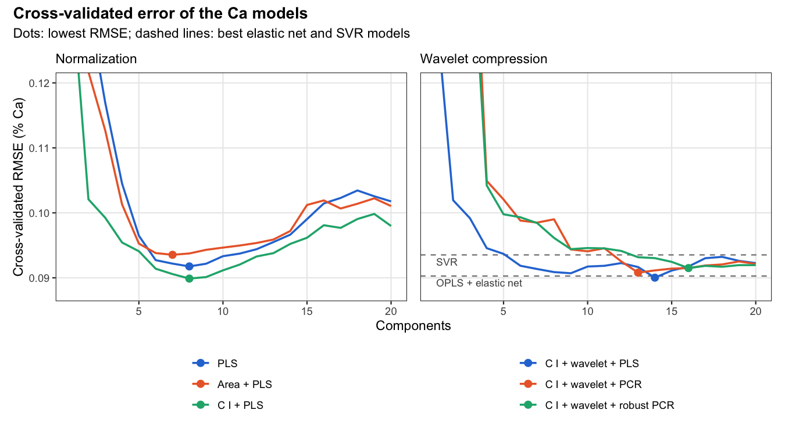
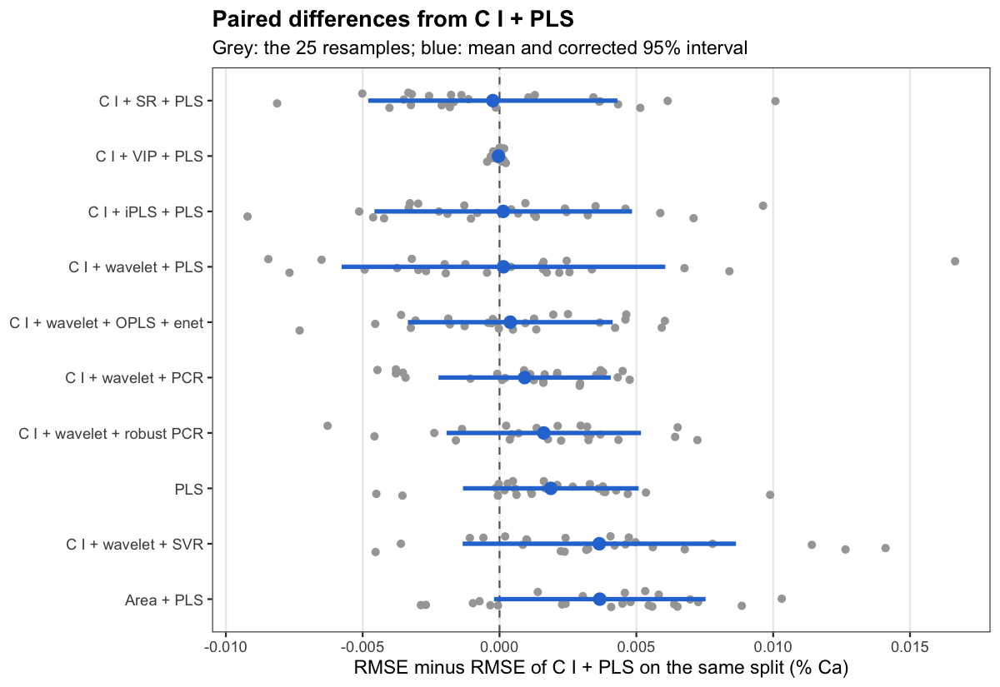

specProc processes and analyzes emission spectra, streamlining the pipeline from raw spectra to calibrated concentrations. While specifically developed for laser-induced breakdown spectroscopy (LIBS), it seamlessly supports other plasma techniques such as ICP-OES. Select functions can also be used to process Raman and infrared spectroscopy data. The package structures data with one spectrum per row and wavelengths as column names, leveraging a C++ backend to power heavy computations.
Installation
# install.packages("remotes")
remotes::install_github("ChristianGoueguel/specProc", build_vignettes = TRUE)A C++ compiler is needed to build the package from source (Rtools on Windows, Xcode Command Line Tools on macOS).
A LIBS workflow
The vignettes follow a typical LIBS analysis, on the forageLIBS spectra of forage samples:
-
Fitting emission lines (
vignette("peak-fitting")): line identification, wavelength calibration, line profiles and overlapping lines. -
Preprocessing with recipe steps (
vignette("preprocessing")): baseline correction, normalization and otherstep_*()functions, in a tidymodels workflow. -
Calibration curves and figures of merit (
vignette("calibration")): univariate curves, limits of detection and quantification, and the net analyte signal of multivariate models. -
Plasma diagnostics (
vignette("plasma-diagnostics")): electron density, temperature, LTE, self-absorption and calibration-free LIBS.
They are also available as articles on the package website.
Function overview
See the reference for the full list.
Example: Comparing preprocessing pipelines
Which preprocessing and which model suit a LIBS calibration is an empirical question. Since every specProc step is a recipe step, candidate pipelines can be compared on an equal footing: each recipe is re-estimated in every resample, together with the model. Here we predict calcium from all 368 forageLIBS spectra. Calcium has strong lines in these spectra (Ca II 393.37 and 396.85 nm, Ca I 422.67 nm), a laboratory value for every sample, and a calibration error that reaches its minimum within a few components, so the trade-offs are easy to see.
per_spectrum <- \(data, step, ...) {
recipe(~ ., data = data) |>
update_role(all_of(c(spectra_id, minerals)), new_role = "id") |>
step(all_predictors(), ...) |>
prep() |>
bake(new_data = NULL)
}
corrected <- per_spectrum(forageLIBS, step_baseline, lambda = 1e5, options = list(max.iter = 20))
area <- per_spectrum(corrected, step_spectral_norm, method = "area")
carbon <- per_spectrum(corrected, step_line_ratio, reference = 247.856, window = 0.15)
compressed <- per_spectrum(carbon, step_wavelet, level = 3)
ca_recipe <- \(data) {
recipe(Ca ~ ., data = data) |>
update_role(all_of(spectra_id), all_of(setdiff(minerals, "Ca")), new_role = "id")
}The baseline is removed in every pipeline. The steps estimated from the training data (principal components, orthogonal filter, selected wavelengths) and the model parameters are tuned together. Wavelength selection (step_select_wavelengths()) keeps the channels with the largest variable importance in projection (VIP) or selectivity ratio (SR) in a PLS model, or, with interval PLS (iPLS), the contiguous intervals (out of 40) that lower the cross-validated error of a PLS model; the number of channels or intervals is tuned with the components:
# mixOmics scales every predictor by default; scale = FALSE only centers
pls_model <- pls(num_comp = tune()) |> set_mode("regression") |> set_engine("mixOmics", scale = FALSE)
pcr_model <- linear_reg() |> set_engine("lm")
enet_model <- linear_reg(penalty = tune(), mixture = tune()) |> set_engine("glmnet")
svr_model <- svm_rbf(cost = tune(), rbf_sigma = tune()) |> set_mode("regression") |> set_engine("kernlab")
components <- tibble(num_comp = 1:20)
pipelines <- list(
"PLS" = list(ca_recipe(corrected), pls_model, components),
"Area + PLS" = list(ca_recipe(area), pls_model, components),
"C I + PLS" = list(ca_recipe(carbon), pls_model, components),
"C I + iPLS + PLS" = list(ca_recipe(carbon) |> step_select_wavelengths(all_predictors(), method = "ipls", num_intervals = tune(), num_comp = 10), pls_model, expand_grid(components, num_intervals = c(2L, 4L, 6L, 8L))),
"C I + VIP + PLS" = list(ca_recipe(carbon) |> step_select_wavelengths(all_predictors(), method = "vip", num_terms = tune()), pls_model, expand_grid(components, num_terms = c(100L, 300L, 1000L, 3000L))),
"C I + SR + PLS" = list(ca_recipe(carbon) |> step_select_wavelengths(all_predictors(), method = "sr", num_terms = tune()), pls_model, expand_grid(components, num_terms = c(100L, 300L, 1000L, 3000L))),
"C I + wavelet + PLS" = list(ca_recipe(compressed), pls_model, components),
"C I + wavelet + PCR" = list(ca_recipe(compressed) |> step_center(all_predictors()) |> step_pca(all_predictors(), num_comp = tune()), pcr_model, components),
"C I + wavelet + robust PCR" = list(ca_recipe(compressed) |> step_robpca(all_predictors(), num_comp = tune(), options = list(kmax = 20)), pcr_model, components),
"C I + wavelet + OPLS + enet" = list(ca_recipe(compressed) |> step_opls(all_predictors(), num_comp = tune()), enet_model, expand_grid(num_comp = 1:4, penalty = 10^seq(-4, -1, by = 0.5), mixture = c(0.1, 0.5, 1))),
"C I + wavelet + SVR" = list(ca_recipe(compressed), svr_model,expand_grid(cost = 2^seq(0, 8, by = 2), rbf_sigma = 10^seq(-4.5, -2.5, by = 0.5)))
)Each pipeline is cross-validated in five repeats of a 5-fold split that keeps the spectra of a sample in the same fold. The 25 resamples are spread over parallel workers with the future package; tune gives each resample the same random numbers in parallel as in sequence, so the results do not depend on the number of workers:
cv_folds <- \(data) {
set.seed(2026)
group_vfold_cv(data, group = Sample, v = 5, repeats = 5)
}
future::plan("multisession", workers = parallelly::availableCores(omit = 1))
results <- map(pipelines, \(p) {
rec <- p[[1]]
tune_grid(
workflow(rec, p[[2]]),
resamples = cv_folds(rec$template),
grid = p[[3]],
metrics = metric_set(rmse, rsq),
control = control_grid(save_pred = TRUE)
)
})
future::plan("sequential")The cross-validated RMSE of the component-based pipelines as a function of the number of components: on the left, the normalizations; in the middle, the models of the wavelet coefficients, with the best elastic net and SVR models (on the same coefficients) as references; on the right, the wavelength selections, each with its best number of channels or intervals, and PLS on all the channels (grey) as reference:

All pipelines are evaluated on the same 25 splits, so they can be compared split by split, here with C I + PLS. Since the resamples overlap, the standard error of the mean difference is inflated as in the corrected repeated k-fold test (Nadeau and Bengio, 2003; Bouckaert and Frank, 2004):

Contrasts between preprocessing steps and models:
| Contrast | Mean difference (% Ca) | Splits where the first is better | p (corrected) |
|---|---|---|---|
| C I + PLS vs PLS | -0.0019 | 20 / 25 | 0.24 |
| Area + PLS vs PLS | 0.0018 | 8 / 25 | 0.40 |
| C I + iPLS + PLS vs C I + PLS | 0.0001 | 12 / 25 | 0.95 |
| C I + VIP + PLS vs C I + PLS | 0.0000 | 16 / 25 | 0.67 |
| C I + SR + PLS vs C I + PLS | -0.0002 | 16 / 25 | 0.91 |
| C I + wavelet + PLS vs C I + PLS | 0.0001 | 12 / 25 | 0.96 |
| C I + wavelet + SVR vs C I + wavelet + PLS | 0.0035 | 5 / 25 | 0.36 |